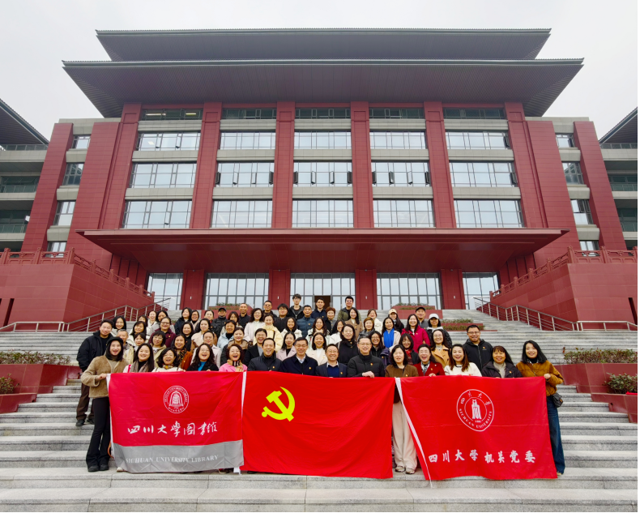

学院通知 · 校园活动
学思践悟全会精神 书香浸润初心使命——图书馆党委与机关党委联合开展主题党日活动
发布时间：2025-12-19 10:30:19
12月11日，机关党委与图书馆党委携手，在四川大学眉山校区及眉山市永丰村联合举办党的二十届四中全会精神学习暨“悦读悦享”读书交流主题党日活动，来自工学图书馆党支部、党委统战部党支部、国际处党支部、对外联络办党支部等4个党支部的70余名党员在学思践悟中凝聚奋进力量，在书香浸润中坚定文化自信。 上午10时，活动在眉山校区岷峨楼报告厅启幕。机关党委副书记曹勇明从九个方面解读四中全会精神，并宣讲学校“十四五”重要办学成就和“十五五”美好愿景，增强大家深入学习贯彻全会精神、助力学校高质量发展的信心和责任。 图书馆党委书记秦远清带领大家重温习近平总书记对三苏文化的重要指示精神，坚定文化自信、担负文化使命，“读书正业、孝慈仁爱、非义不取、为政清廉”。 图书馆党委副书记杜小军宣读“月读一本·悦读悦享”倡议书，倡导机关和图书馆各党支部要常态化开展读书活动，丰富知识储备，涵养精神品质，增强履职本领。 读书分享环节，魏丽敏、何玮、徐慧媛、程小钰等4位党员围绕研读《苏东坡新传》，结合工作实际分享对苏东坡家国情怀、豁达胸襟的感悟，交流优秀传统文化与新时代工作的融合路径，引发大家共鸣。 活动期间，党员们还参观了眉山校区，在新校区建设中感悟学校“十四五”发展成就，在古籍展览中感受文化传承魅力，并追随习近平总书记足迹赴眉山市永丰村实地考察，在参观高标准农田建设、守护“天府”粮仓的实践中，深化对党的二十届四中全会对加快农业农村现代化的战略部署。 此次活动是图书馆党委与机关党委落实联学共建机制的重要举措，通过学精神、悟指示、发倡议、享书香的有机结合，推动理论学习入脑入心，切实把四中全会精神学习成果转化为工作动力，以文化赋能履职效能，为学校加快中国特色世界一流大学建设贡献力量。 来源：机关党委
